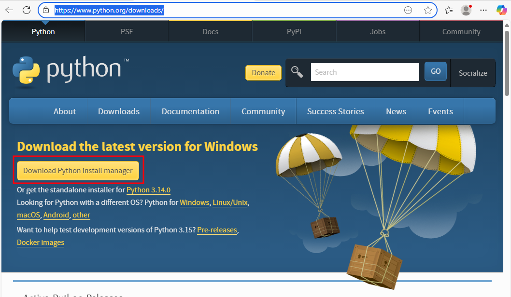
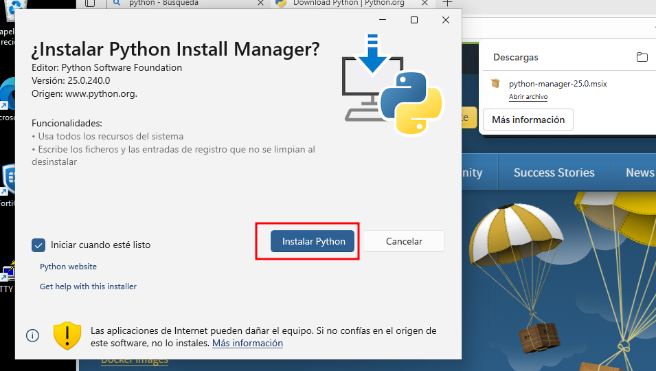
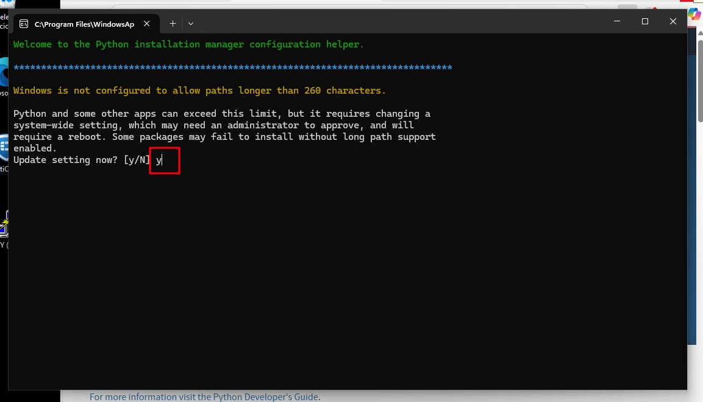
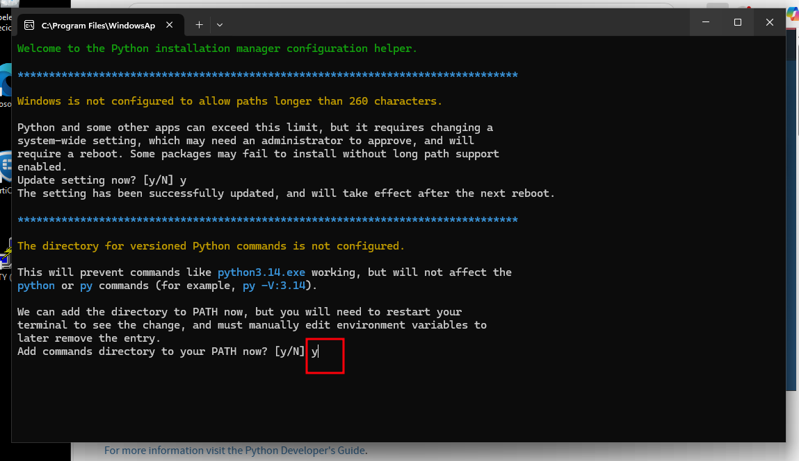
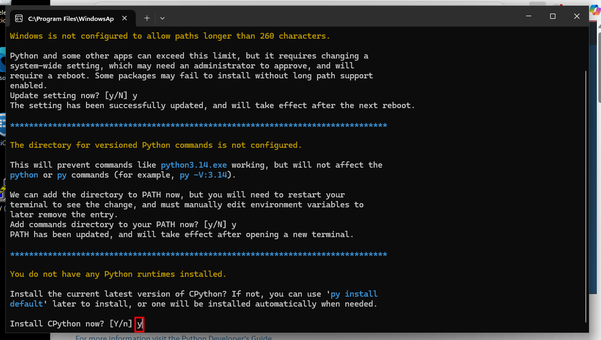
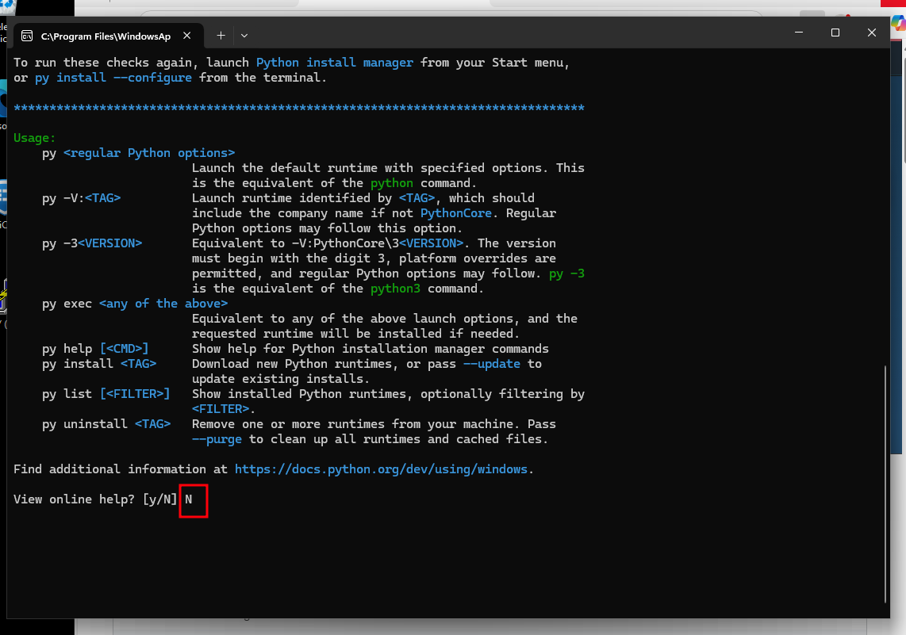
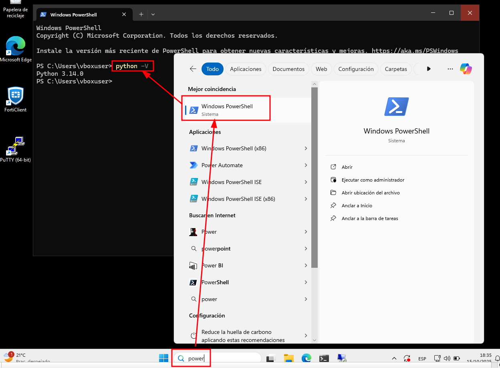
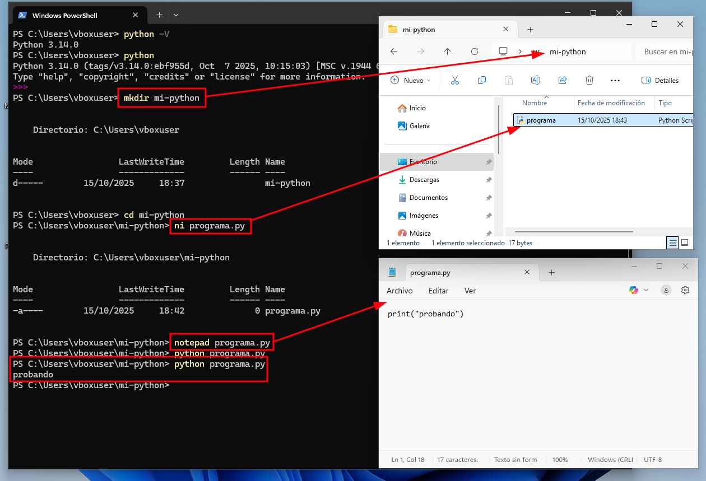

Instalando Python
Para comenzar a programar en Python, primero necesitamos instalar Python en nuestra computadora. Python es el lenguaje de programación que usaremos en este curso es fácil de aprender y con una gran comunidad de usuarios.
El primer paso es descargar el instalador de Python desde su sitio web oficial: https://www.python.org/
… y luego seguir los pasos del instalador.
    Consola Python
Listo, ya tenemos Python instalado en nuestra computadora. Ya podemos abrir una terminal (o consola) de Python y probar que todo funciona correctamente.
print("Probando")
Podemos tambien probar que Python funciona correctamente desde PowerShell (que será nuestra terminal en Windows).
Podemos ver la versión de Python instalada con el comando: .. code-block:: powershell
python -V
Tambien alli mismo podemos abrir la terminal interactiva de Python con el comando:
python
Usando PowerShell
Aqui podemos ver el uso de algunos comandos básicos de PowerShell (la terminal que usaremos en Windows):
mkdir nombre_carpeta:Crea una nueva carpeta con el nombre indicado.
cd nombre_carpeta:Cambia el directorio actual a la carpeta indicada.
ni nombre_archivo:Crea un nuevo archivo con el nombre indicado.
notepad nombre_archivo.py:Abre el archivo indicado con el editor de texto Notepad (en este caso un archivo Python).
python nombre_archivo.py:Ejecuta el archivo Python indicado.